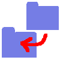

Status list¶
Once submitted to Soma-workflow, the jobs, workflows and file transfers are associated to statuses which reflect their states in the system. Here is the list of possible statuses for each class of objects.
Job status¶
Here is the list of the job statuses and the associated icons displayed in the GUI.
not_submitted
The job was not submitted yet to soma-workflow.
undetermined
Transitive status. The job status is changing and will be updated soon.
submission_pending
Due to a limitation of the number of job in the queue (see Configuration items optional on the server side:), the job is waiting to be submitted to the DRMS.
queued_active
The job was submitted to the DRMS and is currently waiting in the queue.
running
The job is running on the computing resource.
- or done
The job finished normally. However it does not mean that it ended with success (see Job exit status).
- failed
The job exited abnormally before finishing.
- warning
The workflow engine process in charge of the monitoring of the job status was killed or failed. The job or the workflow containing the job has to be stopped and restarted.
- delete_pending
Transitive status. The job will be deleted soon.
- kill_pending
Transitive status. The job will be killed soon.
{kind=link}
{kind=link}
{kind=link}
Job exit status¶
- finished_regularly
The job finished regularly. The exit value is displayed in the GUI and is available from the Python API. If the value is different from 0 Soma-workflow considers that the job failed.
- finished_signal
The job finished due to a signal. The signal is displayed on the GUI and is available from the python API (depending on DRMAA implementation).
- killed_by_user
The job was killed by the user.
- aborted
The job never ran.
- exit_status_undetermined
The exit status can not be determined.
Workflow status¶
The workflow was not submitted to Soma-workflow.
The workflow was submitted to Soma-workflow.
- workflow_done
The workflow is done.
- delete_pending
Transitive status. The workflow will be deleted soon.
- warning
The workflow engine process in charge of the workflow execution was killed or failed on the computing resource side. The workflow has to be stopped and restarted (the jobs which ended with success will not be restarted).
{kind=link}
Note
In case of warning status a simple solution is to stop and restart the workflow. The job which ended with success will not be restarted.
However, the warning status does not mean that the jobs failed. In case of very long jobs, you can check yourself the status of the job(s) on the DRMS and choose to stop the jobs from the DRMS or not.
File Transfer status¶
do not exist
The file(s) do not exist. For example: output files at the beginning of a workflow execution.
- on client side
The file(s) exist on the client side only. For example: input files.
- on computing resource side
The file(s) exist on the computing resource side only. For example: output files after the end of a job.
on both sides
The file(s) exist both on the client and computing resource side. For example: A transfer ended.
- transfering client->cr
The file(s) are being transfered form the client to the computing resource.
-  transfering cr->client
The file(s) are being transfered from the computing resource to the client.
{kind=link}
{kind=link}
{kind=link}
{kind=link}